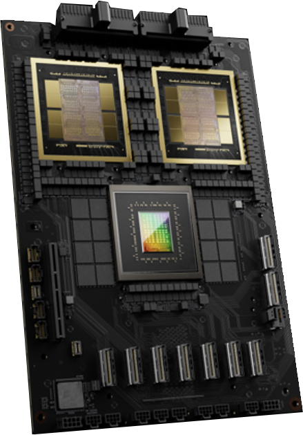
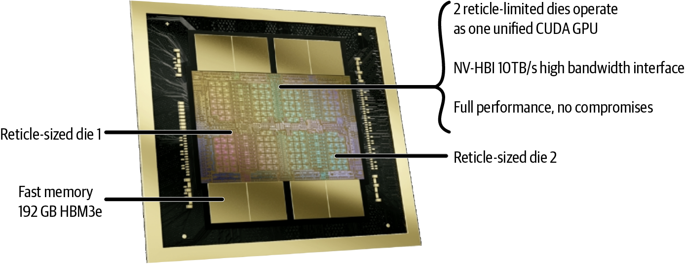
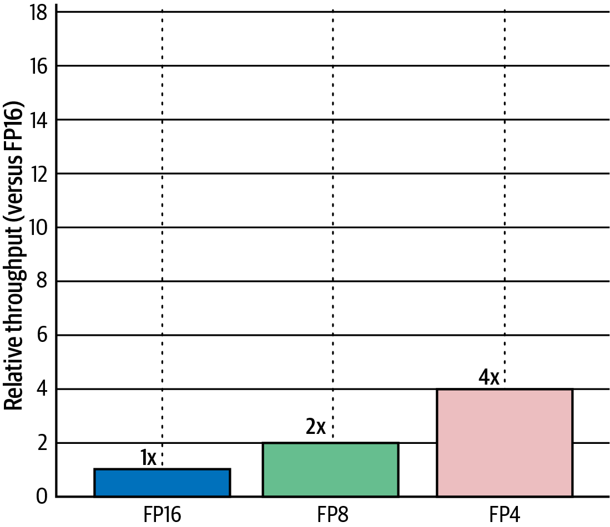
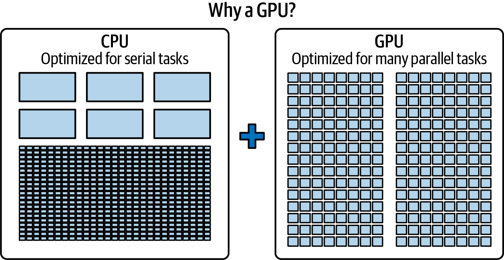
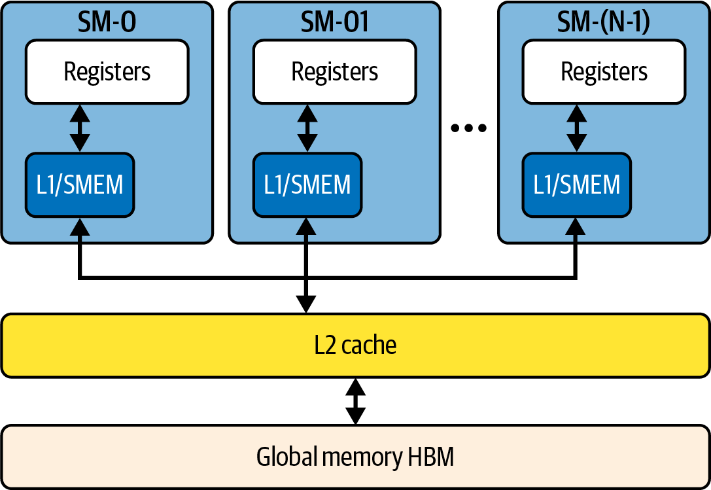
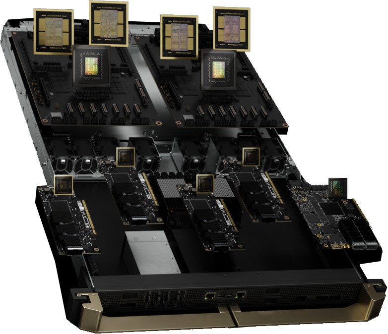
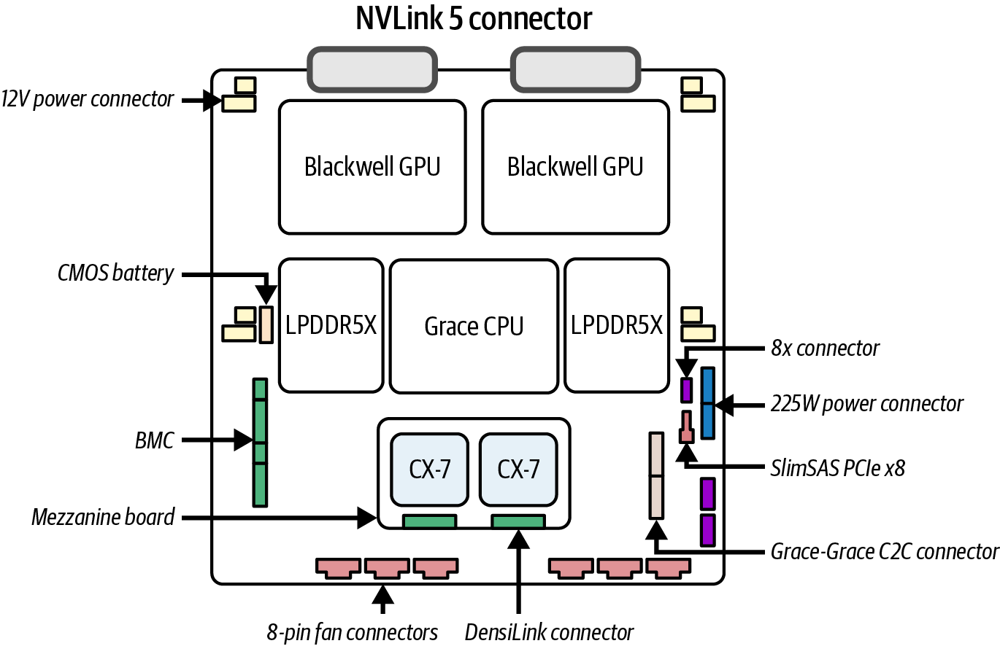
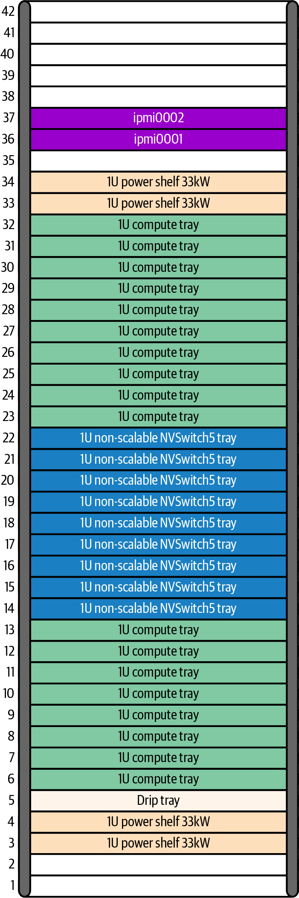
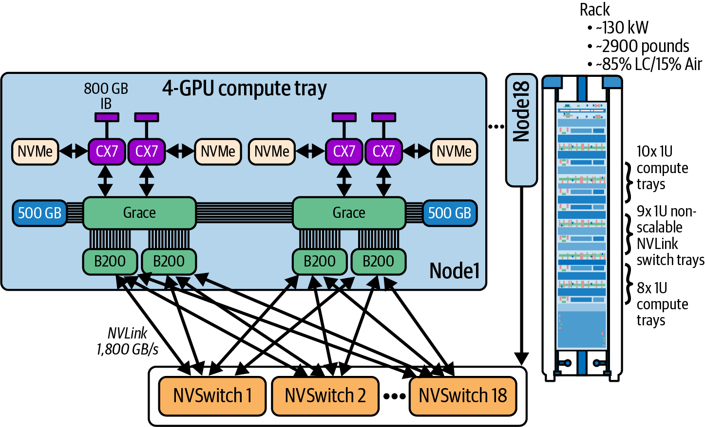
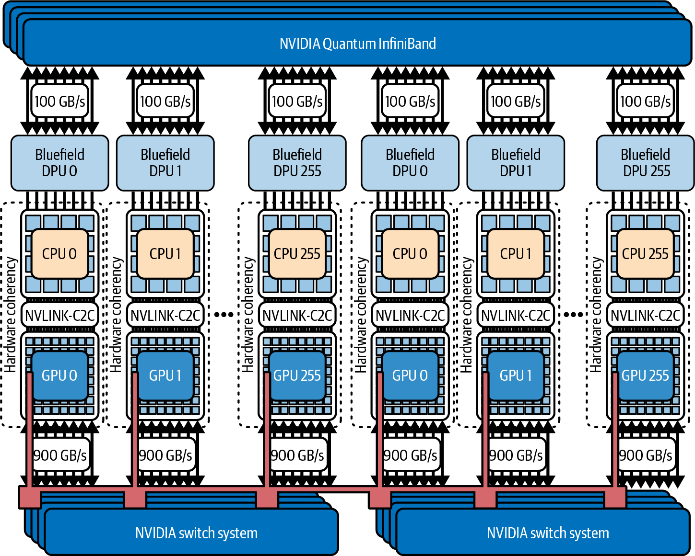

设想把相当于一台超级计算机的 AI 硬件压缩进一个机架。NVIDIA 的最新架构正是如此。本章将探讨 NVIDIA 如何将 CPU 与 GPU 融合为强大的超级芯片，再用超高速互连连接数十个此类模块，构成“机架中的 AI 超级计算机”。我们将介绍 Grace CPU 和 Blackwell GPU 这两个基础硬件构件，并了解其紧密集成和巨大内存池如何简化 AI 工程工作。
随后，我们将扩展到网络结构：它把 72 块 GPU 像一台机器一样连接起来。一路上会重点说明计算性能、内存容量和效率上的跃升如何赋予该系统强大能力。读完本章，你将理解这些前沿硬件如何使训练和服务过去看来不可能的多万亿参数模型成为可能。
NVIDIA 的扩展方法从单个结合 CPU 与 GPU 的超级芯片模块开始。自 Hopper 一代起，NVIDIA 开始将基于 ARM 的 CPU 与一块或多块 GPU 封装在同一单元内，并通过高速接口紧密连接。结果是一个表现如统一计算引擎的模块。
超级芯片的首个实现是 Grace Hopper（GH200），它将一颗 Grace CPU 与一块 Hopper GPU 配对。随后出现的 Grace Blackwell（GB200）超级芯片，则在同一封装中配对一颗 Grace CPU 与两块 Blackwell GPU。如图 2-1所示，Grace CPU 位于模块中央，周围是两颗 Blackwell GPU 裸片。

在传统系统中，CPU 和 GPU 分别拥有内存池，并通过相对较慢的总线（如 PCIe）通信，因此数据必须来回复制。NVIDIA 的超级芯片通过名为 NVLink-C2C（chip-to-chip）的定制高速链路连接 CPU 和 GPU，从而消除了这一障碍。
在 GB200 超级芯片中，NVLink-C2C 在 Grace CPU 和 Blackwell GPU 之间可提供最高约 900 GB/s 带宽。相比之下，PCIe Gen5 x16（Blackwell B200）单向约为 64 GB/s，PCIe Gen6 x16（Blackwell Ultra B300）单向约为 128 GB/s。NVLink-C2C 的互连速度比典型 PCIe 高一个数量级。更重要的是，它具有缓存一致性。
缓存一致性意味着 CPU 和 GPU共享一个一致的统一内存架构，因此始终看到相同的值。实际中，超级芯片上的 Grace CPU 和 Blackwell GPU 都可像访问一个巨大内存池一样直接访问彼此内存。GPU 可读取或写入 CPU 内存中存储的数据，反之亦然，无需显式复制。NVIDIA 常将这种架构称为统一 CPU-GPU 内存（Unified CPU-GPU Memory）或扩展 GPU 内存（Extended GPU Memory，EGM）；它有效模糊了 CPU 内存与 GPU内存之间的边界。
每个 Grace Blackwell 超级芯片都携带极大的内存容量。Grace CPU 配有数百 GB 的 LPDDR5X DRAM，而每块 Blackwell GPU 都有自身的高速高带宽内存（HBM）堆叠。
在 GB200 超级芯片中，Grace CPU 提供最高约 480 GB、带宽最高约 500 GB/s 的 LPDDR5X；两块 Blackwell GPU 合计提供最高约 384 GB HBM3e 内存（每块 GPU 共 192 GB）。总计，GB200 超级芯片在统一地址空间中向 GPU 和 CPU 暴露约 900 GB 可访问的一致性统一内存。
简单说，每个超级芯片都拥有接近 1 TB 的高速统一内存可供使用。这对巨大 AI 模型是一次重大变化。在旧系统中，单块 GPU 的内存可能不足 100 GB，更大的模型必须切分或卸载到更慢的存储。这里，GPU 可将 CPU 内存无缝作为扩展使用。
若神经网络层或大型嵌入表放不进 GPU 本地 HBM，它可以位于 CPU 内存中，GPU 仍可通过 NVLink-C2C 使用它。从编程角度，统一虚拟地址空间和一致性简化了正确性处理。但出于性能考虑，仍应使用异步预取和分阶段流水线等方法显式管理放置和内存移动。通过 NVLink-C2C 访问 LPDDR5X 的延迟更高、带宽约比直接访问 HBM 低一个数量级。
GPU 内存仍比 CPU 内存快得多，也更接近 GPU 核心；可以把 CPU 内存视为容量大但稍慢的扩展。访问 LPDDR5X 不如访问 GPU 上的 HBM 快，其带宽约低一个数量级、延迟更高。智能运行时会将最常用数据保留在 HBM 中，将 CPU 的 LPDDR5X 用于溢出数据或对速度不那么敏感的数据。关键在于，溢出数据不再需要移往 NVMe SSD 或经由网络。
GPU 可按约 900 GB/s（每方向 450 GB/s）从 CPU RAM 取数；虽慢于 HBM，却远快于从 NVMe SSD 存储取数。这种灵活性很关键：例如，一个 500 GB 的模型（大到放不进单块 GPU 的 HBM）仍可完全置于单个超级芯片模块中，访问合计 192 GB（可用 180 GB）HBM 和约 500 GB CPU 内存。该模型无需跨多 GPU 切分即可运行；GPU 只需在需要时透明地从 CPU 内存拉取额外数据。
归根结底，只要整个模型能放进超级芯片的 CPU 与 GPU 合计内存，内存大小就不再是容纳超大模型的硬性限制。许多研究者都遇到过模型放不进 GPU 时令人沮丧的“内存不足”（out of memory，OOM）错误；这种架构旨在大幅推开这一边界。
Grace CPU 本身并不迟缓。它是 NVIDIA 为带宽和效率定制的 ARM Neoverse V2 CPU。在超级芯片中，它负责通用任务、预处理并向 GPU 供给数据，以及管理所连接的大量内存。其时钟频率适中，却通过巨大的内存带宽——对 LPDDR5X 最高约 500 GB/s——以及包括超过 100 MB L3 缓存的大量缓存加以弥补。
其设计理念是：向 GPU 输送数据时，CPU 不应成为瓶颈。它可从存储流式读取数据，或执行分词、数据增强等即时数据变换，再经由 NVLink-C2C 高效供给 GPU。若工作负载的一部分更适合 CPU，Grace 核心可处理它，并让 GPU 立即访问结果。
这是一种协调的耦合：CPU 在随机内存访问、控制密集型代码等 GPU 较弱的领域扩展 GPU 的能力；GPU 则加速 CPU 无法跟上的数值计算。
CPU 与 GPU 之间的低延迟链路意味着它们可在没有通常开销的情况下交换任务。例如，CPU 启动 GPU 内核会比传统系统快得多，因为命令不必穿越缓慢的 PCIe 总线。CPU 与 GPU 实质上位于同一块板上，这类似调用快速的本地函数而非较慢的远程函数。接下来讨论超级芯片的强力计算引擎：Blackwell GPU。
Blackwell 是 NVIDIA 对这一代 GPU 的代号。无论计算能力还是内存，它都较前代 Hopper（H100）GPU 有显著跃升。Blackwell B200 和 B300“Ultra”GPU 不是单芯片，而是采用多芯片模块（multichip module，MCM）设计，在一个模块中放置两颗 GPU 裸片。因此，Blackwell 被称为双裸片 GPU（见图 2-2）。
本节会深入介绍双裸片架构；本书其余部分将把 Blackwell 的两颗组合 GPU 裸片统称为“Blackwell GPU”。
这种小芯片（chiplet）方法将原本会是一颗巨大 GPU 的设计拆分为较小 GPU 裸片，再用超高速封装内裸片互连将它们连接起来。为什么这样做？因为单片式裸片受制造限制，硅片上可制造的芯片尺寸有上限。将两颗物理 GPU 裸片组合到单个模块，可使 NVIDIA 将该模块的总晶体管预算翻倍。

对于 Blackwell B200 MCM，每颗 GPU 裸片约有 1,040 亿个晶体管和 96 GB HBM3e 内存。组合后的 GPU 模块每块 B200 约有 2,080 亿个晶体管和 192 GB（可用 180 GB）总内存。相比之下，Hopper H100 GPU 约有 800 亿个晶体管和 80 GB HBM3（Blackwell 使用 HBM3e）内存。因此，Blackwell B200 的晶体管数量超过两倍，内存容量约增加 2.4 倍。
Blackwell 的两颗 GPU 裸片通过称为 NV-HBI（High-Bandwidth Interface）的专用高速 10 TB/s 裸片间互连通信。这使模块中的两颗 GPU 裸片作为一个统一 GPU 工作；上层软件仅看到一个 GPU。
从系统角度看，Blackwell GPU 是一个单独模块或设备，具有大型内存池（192 GB HBM3e，其中 180 GB 可用）和大量执行单元；但底层实际是两颗芯片协同工作。NVIDIA 的软件与调度会确保工作在两颗 GPU 裸片间平衡，并使内存访问保持一致性。因此开发者可以在很大程度上忽略这种复杂性，因为它们按 NVIDIA 的设计呈现为一个 GPU。
每个 Blackwell B200 GPU 模块具有横跨两颗 GPU 裸片（各 96 GB）的 192 GB（可用 180 GB）HBM3e 内存，并划分为 8-Hi 堆叠。一个 8-Hi HBM3e 堆叠由八颗 DRAM 裸片垂直堆叠构成，每颗 3 GB，故每个堆叠总计 24 GB。
B200 GPU 使用八个此类堆叠（每颗裸片四个），提供 192 GB（可用 180 GB）的封装内内存（192 GB = 8 个堆叠 × 每堆叠 24 GB）。相较上一代 Hopper GPU，这增加了每 GPU 的堆叠数和容量，为模型参数、激活值、梯度和输入数据留出更多空间。
由于纠错码（error correcting code，ECC）、系统固件占用、制造限制及其他导致芯片无法暴露完整 192 GB 的因素，每块 B200 的 192 GB HBM3e 中只有 180 GB 可用。因此，下文提及 Blackwell B200 可用内存时使用 180 GB 而非完整的 192 GB。
内存也更快：Blackwell B200 的 HBM3e 每块 GPU 聚合带宽最高约 8 TB/s。相比之下，Hopper 使用上一代 HBM3，每块 GPU 约为 3.35 TB/s。因此，Blackwell 的内存带宽吞吐量约为 Hopper 的 2.4 倍。
以每秒 8 TB 的速度供给数据，可让 Blackwell GPU 核心忙于大矩阵运算，较少因等待数据而停顿。NVIDIA 还加强了片上缓存：Blackwell 的 L2 缓存总量为 126 MB（每颗裸片 63 MB）。这种缓存是 GPU 上保存近期使用数据的小型超高速内存。
与 Hopper 的 50 MB L2 缓存相比，L2 容量增加超过 2.5 倍，使 Blackwell 能在芯片上保留更多神经网络权重或中间结果，避免额外访问 HBM。这同样有助于确保 GPU 计算单元很少因缺数据而闲置。
接下来说明 Blackwell GPU 如何配备专用的低精度 Tensor Cores，以及 NVIDIA 针对 Transformer 优化、称为 Transformer Engine 的硬件与软件 API。PyTorch 等框架和 vLLM 等推理引擎可通过 CUDA、CUTLASS 和 OpenAI Triton 等库支持这些优化，后续章节将讨论它们。
说到计算单元，Blackwell 引入了专门面向 AI 工作负载的增强。其中核心是 NVIDIA 的 Tensor Core 技术和 Transformer Engine（TE）。Tensor Cores 位于 GPU 的每个流式多处理器（streaming multiprocessor，SM）中，是可高速执行矩阵乘法的专用单元。
Tensor Cores 在此前各代已存在，但 Blackwell Tensor Cores 支持更多数值格式，包括 8 位、4 位浮点等极低精度格式。低精度背后的想法很简单：使用更少位表示数字，便可同时执行更多运算；同一数据占用的位数也更少，内存利用更充分。当然，这要求算法能容忍一定的数值精度损失。如今，许多 AI 算法在设计时就考虑了低精度数值格式。
NVIDIA 率先推出 TE，用于在深度学习中自动调整并使用混合精度：关键层使用较高精度（FP16 或 BF16），较不关键的层使用 FP8。TE 会自动优化精度平衡，目标是在较低精度下维持模型准确性。
Hopper 一代的 TE 首次引入 FP8 支持，相较 FP16 可使理论吞吐量翻倍。Blackwell 更进一步，引入 NVIDIA FP4（NVFP4）：这是一种仅使用 FP8 一半位数的 4 位浮点格式。FP4 足够小，在适用工作负载上可能使计算吞吐量相对 FP8 再翻倍。图 2-3显示 FP8 和 FP4 相对 FP16 的加速比。
一整个 NVL72 机架（72 块 GPU）在 4 位精度下的理论 Tensor Core 吞吐量超过 1.4 exaFLOPS（即 1.4 × 1018 FLOPS）。这个数字令人惊叹，使单个机架跻身世界最快超级计算机的量级——尽管是在低精度 FP4 下。真实工作负载未必总能达到峰值，但该能力的确存在。
现代 GPU 使用的 TE 增加了 NVFP4 支持，并改进了缩放与校准。实践中，可在 PyTorch 等框架内使用其内核和模块来采用 TE；这样，FP8 与 NVFP4 会在能够保持精度时应用。并非所有框架都会完全自动地为每层作出这一决定。

高级技术包括在训练和推理期间动态改变神经网络各层精度。目标是为每层使用仍能保持模型准确性的最低精度。例如，TE 可能将神经网络前几层保留为 FP16，因为早期层可能对噪声敏感；而基于启发式规则，它可能为容忍度更高的后续层，或高精度并非那么关键的巨大嵌入矩阵使用 FP8 或 FP4。
所有这些可在 NVIDIA 库和 PyTorch 等 AI 框架内部完成。用户只需启用混合精度，就可能获得近似“免费”的大幅加速。第 9 章将讨论混合精度；如今许多 LLM 正因此使用它。相对 FP16 和 FP32，这些低精度可提高训练速度并减少精度损失。Blackwell 的设计让 FP8 与 FP4 更易用、更高效。
这些低精度格式也能降低内存使用量。与 FP8 相比，FP4 将每个参数所需内存减半（FP8 又将 FP16 的内存使用量减半），因此可在 GPU 内存中容纳更大的模型。
NVIDIA 显然押注于 AI 的未来在于低精度算术，并赋予 Blackwell 擅长此类计算的能力。这对大模型推理服务尤为关键，因为吞吐量（每秒 token 数）和延迟至关重要。
为说明 Hopper 到 Blackwell 的代际跃升，NVIDIA 报告称：基于 H100 的系统在一个 1.8 万亿参数 MoE 模型上，每 GPU 每秒只能生成约 3.4 个 token，且首 token 延迟超过 5 秒，难以用于交互式场景。
基于 Blackwell 的系统（NVL72）在相同模型上达到每 GPU 每秒约 150 个 token，首 token 延迟低至约 50 毫秒。按该厂商测试配置计算，这相对 Hopper 一代的实时吞吐量提升约 30 倍。NVL72 因此能让这一大模型提供实时响应，打开更多低延迟应用场景；实际结果取决于模型、精度和服务配置。
这一加速来自原始 FLOPS、更快 GPU、低精度（FP4）的结合，以及通过 NVLink 互连持续向 GPU 供给数据。它说明跨计算与通信的整体设计如何转化为实际性能提升。
归根结底，Blackwell GPU 比前代更强大、更智能，也获得更充足的数据供给。借助 Tensor Cores、TE 和低精度，它们可更快完成数值计算；巨大的内存带宽、大缓存和 NVLink 则确保数据能迅速可用。
每块 Blackwell GPU 与前代一样，由许多流式多处理器（SM）组成。可将其视作 GPU 的“核心”，如图 2-4所示。

每个 SM 包含多个算术单元（用于 FP32、INT32 等）、用于矩阵计算的 Tensor Cores、用于内存操作的加载/存储单元，以及处理超越函数等的某些特殊函数单元。GPU 还有自己的小型超高速内存池，包括寄存器、共享内存和 L1 缓存。
SM 以称为 warp 的固定大小分组执行线程。每个 warp 恰含 32 个线程，以锁步方式执行完全相同的指令。这称为单指令多线程（single instruction, multiple threads，SIMT）执行模型。
SM 可并行执行许多活跃 warp， 以帮助掩盖线程等待从全局内存取数的延迟。设想一个 SM 同时有数十个 warp（数百个线程）在飞行：若一个 warp 等待内存读取，另一个 warp 可以运行。这称为延迟隐藏（latency hiding）。本书会反复讨论它；它是性能调优工具箱中非常重要的工具。
Blackwell 等高端 GPU 会有数百个 SM，每个 SM 都能同时运行数千线程，因此单块 GPU 上可拥有数万个活跃线程。如前所述，所有这些 SM 共享 126 MB L2 缓存，以及连接 HBM 的内存控制器。内存层级包括：寄存器（每线程）→ 共享内存（每个 SM 上、每线程块）→ L1 缓存（每 SM）→ L2 缓存（GPU 上所有 SM 共享）→ HBM 内存（片外），如图 2-5所示。

为了获得最佳性能，数据应尽可能停留在该层级的高位。即便 HBM 带宽达到 8 TB/s，如果每次操作都访问 HBM，GPU 仍会因片外内存访问延迟增加而频繁停顿。将可复用数据保留在 SM 本地内存或 L2 缓存中，GPU 才能实现极高吞吐量。Blackwell 将缓存和带宽翻倍，正是为了持续供给 GPU。
作为性能工程师，我们会看到许多内核的性能既受计算能力，也受内存流量与吞吐量限制。NVIDIA 显然将 Blackwell 设计为使许多 AI 工作负载的 FLOPS 与内存带宽相匹配。
Blackwell 的设计平衡了计算与内存，因此对于许多 AI 内核，GPU 能以较少停顿持续计算。实践中，经过良好优化的稠密数学运算可复用片上内存中的数据，接近峰值 FLOPS，而不会严重受内存限制。
这些特性意味着，在代码经过良好优化时，GPU 通常会忙于计算而非等待数据。请注意，巨大归约、随机内存访问等操作仍可能受内存限制，但更新后的 GPU、内存和互连硬件会在一定程度上缓解这一问题。
将两块 GPU 和一颗 CPU封装进超级芯片，可得到极强大的节点。下一项挑战是连接许多此类超级芯片，以扩展到更大模型的训练。
NVIDIA 提供一种使用 GB200/GB300 超级芯片的大型机架配置，称为 NVL72 系统。NVL72 指拥有 72 块 Blackwell GPU 和 36 颗 Grace CPU、全部通过 NVLink 互连的系统。本质上，它是一整个机架中的 AI 超级计算机。
如图 2-6所示，GB200/GB300 NVL72 由 18 个计算节点构建；每个节点包含两个 GB200/GB300 超级芯片，因此每个计算节点合计为四块 Blackwell GPU 和两颗 Grace CPU。

这里，每个超级芯片模块包含一颗 Grace CPU 和两块 Blackwell GPU（每块 B200 都是双裸片 MCM）。NVL72 将 18 个这样的托盘连接在一起。通过互连这 18 个计算节点，GB200/GB300 NVL72 将 72 块 Blackwell GPU（18 节点 × 每节点 4 块 GPU）和 36 颗 Grace CPU（18 节点 × 每节点 2 颗 CPU）组成强大的统一 CPU-GPU 集群。
NVL72 的特别之处在于：在单个 NVLink 域内，每块 GPU 都能通过 NVLink Switch 网络结构以极高速度与任意其他 GPU 通信。NVIDIA 通过 GPU 上的 NVLink 5 连接和名为 NVSwitch 的专用交换芯片实现这一点。
每块 Blackwell GPU 提供18 个 NVLink 5 端口。NVL72 将所有端口连接至 NVLink Switch System，每 GPU 的 NVLink 聚合双向带宽为 1.8 TB/s（18 条 NVLink 链路 × 每条双向 100 GB/s）。每个 NVLink 交换托盘提供 144 个、速率 100 GB/s 的 NVLink 端口。九个托盘中，每块 GPU 的 18 条 NVLink 5 链路分别连接到一个 NVSwitch 芯片，使 72 块 GPU 以全双向带宽完全互连。
这相当于 Hopper GPU 所用上一代每 GPU NVLink 带宽的两倍。Hopper H100 也使用 18 个 NVLink 4 端口，但其速度为 NVLink 5 的一半。经 NVLink 的 GPU 间延迟处于个位数微秒范围。
GPU 通过 NVSwitch 芯片以网络方式连接。NVSwitch 本质上类似网络交换机，却专为 NVLink 构建。因此，任一 GPU 都可在 NVLink Switch System 中经过一级交换，以全双向带宽到达另一 GPU。在单个 NVL72 机架内，这种单级特性成立，因为每块 GPU 用其 18 条 NVLink 链路连接到 18 颗 NVSwitch 芯片，从而形成经过单个交换机的路径。图 2-7展示 NVL72 所用的 NVLink Switch 托盘。

每个交换托盘包含两颗 NVSwitch 芯片和多个高速端口。如图 2-8所示，NVL72 机架由 9 个此类交换托盘和 18 个计算托盘组成。

由于 9 个交换托盘各含两颗 NVSwitch 芯片，NVL72 系统总计有 18 颗 NVSwitch 芯片。网络按全交叉开关布置：每块 GPU 连接到每颗 NVSwitch，每颗 NVSwitch 也连接到每块 GPU，从而在任意 GPU 对之间提供高带宽路径。
每个交换托盘暴露 144 个 NVLink 端口，以完全连接每块 GPU 的 18 条 NVLink 链路。具体而言，每块 GPU 使用其 18 条 NVLink 链路连接到 18 颗 NVSwitch 芯片（每个交换机一条）。这意味着任何 GPU 都可经过一跳（GPU → NVSwitch → GPU）到达任意其他 GPU，同时获得极大带宽。图 2-9展示完整的 NVL72 架构：72 块全互连 GPU（36 个 GB200 超级芯片）和 18 颗 NVSwitch。

在 NVL72 机架内，整个 72-GPU 网络的聚合双向带宽约为 130 TB/s。作为参照，这比同等规模的顶级 InfiniBand 集群高出许多倍。该设计提供全互连高带宽网络结构和跨 GPU 的全局地址空间，使集合操作和单边操作得以高效执行，同时仍由软件显式控制同步和一致性。
从编程模型的角度看，一块 GPU 可以通过 NVLink 使用点对点和分区全局地址空间（PGAS）模型，例如 NVIDIA SHMEM（NVSHMEM），直接访问另一块 GPU 的内存。各 GPU 缓存并不具备全局一致性。只有 NVLink-C2C 的 CPU–GPU 路径具备缓存一致性。NCCL 和 NVSHMEM 提供同步与顺序保证。
远程直接内存访问（RDMA）是一种网络技术，可在 InfiniBand 和 RoCE 传输中实现主机之间的直接、零拷贝内存传输。InfiniBand Trade Association (IBTA)
可选的远程原子操作由 InfiniBand Trade Association（IBTA）为 InfiniBand 和 RoCE 定义。GPUDirect RDMA 是 NVIDIA 对 RDMA 协议的实现，允许网络接口控制器（NIC）注册 GPU 内存，并通过 nvidia-peermem 驱动直接执行 RDMA。GPU 可以在不经过 CPU 的情况下跨节点交换数据并执行原子操作。GPUDirect RDMAnetwork interface controllers (NICs)nvidia-peermem
节点之间的远程原子操作和单向操作由 NVSHMEM 等上层库提供，它们在 RDMA 传输上实现这些语义。GPUDirect RDMA 提供的是直接数据路径，而不是原子 API 本身。分布式训练和推理工作负载需要在许多 GPU 之间频繁同步并交换信息。
传统上，GPU 分布在不同的计算节点和机架中。同步只能通过 InfiniBand 和以太网等相对较慢的网络链路完成，这往往成为大型 AI 模型在多 GPU 上扩展时的瓶颈。
在 NVL72 系统中，这些交换可以以极高速率通过 NVLink 和 NVSwitch 完成。训练作业或推理集群可以扩展到 72 块 GPU，同时仅产生极小的通信开销。
相比之下，将相同任务扩展到规模相近的 72-GPU H100 集群，需要使用九台独立计算服务器，每台配备八块 Hopper H100 GPU。这种配置依赖 InfiniBand，网络瓶颈会显著降低集群的扩展效率。
下面用具体数字比较 NVL72 与 72-GPU H100 集群。在单个 NVL72 机架内，GPU 到 GPU 的带宽最高可达每 GPU 1.8 TB/s（双向聚合）；对于数 KB 的小消息，延迟约为 1–2 微秒。大消息耗时更长，通常受带宽限制。
NVL72 网络的每 GPU 带宽明显高于基于主机 NIC 的网络，延迟也更低。NVLink 5 为每块 GPU 提供约 1.8 TB/s 的聚合带宽，而现代主机 NIC 在 400–800 Gb/s 链路速率下每端口约为 50–100 GB/s。
实际而言，与传统节点到节点网络相比，基于 NVLink 的 NVL72 系统中集合操作开销要低得多。NVIDIA 报告称，一个 1.8 万亿参数的 MoE 模型在 H100 上约为每 GPU 每秒 3.4 个 token，而 GB200 NVL72 上约为 150 个 token，首 token 时间从超过 5 秒降至约 50 毫秒。reported
在单个 NVL72 机架内，通信速度极快，通信瓶颈几乎被消除；而在传统 InfiniBand 和以太网集群中，通信通常是主要瓶颈。
应尽量将工作负载的通信保留在机架内（“机架内”），以利用高速 NVLink 和 NVSwitch。只有在需要扩展到超出 NVL72 计算和内存资源时，才使用机架间的 InfiniBand 或以太网通信。
另一种由硬件支持的优化是网络内集合操作卸载，涉及 NVLink 和 InfiniBand 可扩展分层聚合与归约协议（Scalable Hierarchical Aggregation and Reduction Protocol，SHARP）。这些路径的启用方式、拓扑约束和支持的集合操作行为各不相同。
NVLink SHARP（NVLS）为启用 SHARP 的 NVSwitch 域提供集合操作卸载支持。对于这类 NVSwitch 系统，支持的集合操作可以在交换机硬件中完成，而不必让 GPU 执行全部聚合计算或传输所有中间结果。
图 2-10 展示了 NVLink Switch System 机架如何使用直接集成在 NVSwitch ASIC 中的 SHARP 引擎，在网络内执行归约，从而卸载归约及其他集合操作。图 2-10

图 2-10：NVLink SHARP（NVLS）归约引擎在 NVSwitch 域内执行交换机内集合操作卸载。
NVSwitch 网络可以在不让数据汇聚经过 GPU 的情况下合并部分结果。SHARP 将集合计算从 GPU 卸载到交换机硬件本身，使 GPU 能专注于更复杂的计算，同时降低集合操作延迟、减少网络传输的数据总量并提高系统效率。
SHARP 的高效率意味着，在分布式训练期间，梯度聚合或参数同步等繁重工作由 NVSwitch 专用的 SHARP 引擎处理。因此，无论是机架内还是机架间配置，都能获得更高效的扩展。
使用 SHARP 后，即使 GPU 数量增加，性能也能接近线性提升。这种网络内计算能力对于超大规模模型训练尤其重要，因为集合操作节省的每一个微秒，都可能转化为显著的整体加速。
接下来讨论一个 NVL72 机架如何与另一个 NVL72 机架或共享文件系统等外部存储系统通信。如前所述，NVL72 机架内部的所有 GPU 到 GPU 流量都由 NVLink 承载；机架之外则依赖更传统的网络硬件。
NVL72 的每个计算节点都配备高速网络接口卡和数据处理单元（DPU）。DPU 从主机 CPU 卸载、加速并隔离网络、存储、安全和管理任务。通过直接在 NIC 上运行这些操作，DPU 可以降低 CPU 开销和延迟。
在 NVL72 设计中，BlueField-3 DPU 负责线速数据包处理、RDMA 和 NVMe over Fabrics（NVMe-oF）操作。NVMe-oF 是 NVMe 的协议变体，可将存储扩展到网络结构上。因此，DPU 无需 CPU 参与，就能在网络、存储和 GPU 内存之间直接移动数据，从而最大限度地提高系统整体吞吐量和效率。
GB200/GB300 NVL72 机架可与 Quantum-X800 InfiniBand 或 Spectrum-X800 以太网网络集成。计算托盘通常在每个节点使用四块 ConnectX-8 800 Gb/s NIC，以获得较高的外部带宽。需要为存储、安全和控制平面任务提供网络内加速或卸载时，则使用 BlueField-3 DPU。
四块 800 Gb/s NIC 可为每个计算节点提供 3.2 Tbit/s，总计每机架约 57.6 Tbit/s（57.6 Tbit/s = 3.2 Tbit/s/节点 × 18 个节点）。尽管这一吞吐量十分惊人，但离开机架后仍需要超高速网络，才能避免多机架扩展在机架边界处形成瓶颈。NVIDIA 将这类多机架部署称为AI 工厂，并通过每节点四块 NIC 使 NVL72 能够接入更大规模的网络结构。
每个节点中的 BlueField-3 DPU 可帮助卸载 RDMA、TCP/IP 和 NVMe SSD 存储访问等网络任务，避免 Grace CPU 因处理网络中断而承受过大负担。DPU 实际上充当智能网络控制器，使用 NVIDIA GPUDirect RDMA 软件在 NIC 与 GPU 内存之间直接移动数据，无需经由主机内存暂存，也不消耗 CPU 周期。
BlueField DPU 可避免 CPU 参与，这在大型训练作业从存储服务器流式读取大规模数据集时尤其有用。具体而言，DPU 可以处理传输并将数据直接写入 GPU 内存，同时让 CPU 专注于数据预处理等其他任务。
除提供性能卸载能力外，DPU 还支持安全多租户。它可以隔离不同作业和用户的网络流量，在节点上充当智能防火墙和交换机。
扩展到多个 NVL72 机架时，NVIDIA 使用 Quantum 系列 InfiniBand 交换机。多个 NVL72 机架可以通过这些 InfiniBand 交换机互连，形成大型 NVL72 机架集群。
例如，由 8 个 NVL72 机架、总计 576 块 GPU 构成的系统，可通过 NVLink Switch System 连接为一个 NVLink 5 域。随后使用 InfiniBand 或以太网将该 NVLink 域连接到其他域（例如其他 NVL72 机架）或外部存储；不过，跨机架 InfiniBand 或以太网通信的性能低于机架内 NVLink/NVSwitch 通信。
简而言之，InfiniBand 和以太网 NIC（例如 NVIDIA ConnectX）以及 BlueField DPU 通常与 NVLink 配合使用。它们既提供机架之间的高带宽连接，也借助 DPU 上的网络内计算卸载协议处理。
由于 NVL72 是非常复杂的系统，NVIDIA 将其作为单机柜预集成“设备”交付。机柜出厂时已装配全部 18 个计算节点、9 个 NVSwitch 单元、内部 NVLink 线缆、配电和冷却系统。用户可以整机订购，设备到货即可使用：只需接入设施电源、连接水冷接口和 InfiniBand 网络线缆，然后开机即可。
该系统开箱后基本即可使用，只需少量设置便能运行 AI 工作负载。无需为 72 块 GPU 单独连接 NVLink，因为 NVIDIA 已在机架内部完成布线。液冷系统也采用自包含设计，后文将对此进行讨论。
这种设备化交付方式可以加快部署，并确保系统由 NVIDIA 正确构建和验证。机架还包括 NVIDIA Base Command Manager 集群管理软件，以及用于集群作业调度和编排的 Simple Linux Utility for Resource Management（SLURM）和 Kubernetes。
简而言之，NVL72 机架旨在直接部署到用户环境中，开箱即可运行生产 AI 工作负载。它不需要手动安装或复杂配置。
随着网络数据吞吐率提升到 800 Gbit/s、1.6 Tbit/s 甚至更高，NVIDIA 开始将硅光子和共封装光学器件（CPO）集成到网络硬件中。这包括 Quantum-X800 InfiniBand 和 Spectrum-X800 Ethernet 平台。两者提供 800 Gb/s 端到端连接及网络内计算功能（例如 SHARP）。采用 CPO 后，光学发射器可以紧邻交换机芯片集成，从而大幅缩短电气路径，支持机架之间更高带宽的链路、降低功耗并提高整体通信效率。
从实际效果看，CPO 等技术正在为将数百乃至数千个机架（AI 工厂）连接到统一网络结构铺平道路，使机架间带宽不再成为瓶颈。这类光网络进步对于超大规模 GPU 系统所需的高性能机架间带宽至关重要。
总结来说，在 NVL72 机架内部，NVIDIA 使用 NVLink 和 NVSwitch 为 72 块 GPU 构建极高速的全互连网络。这些互连速度快且特性一致，使 GPU 在许多集合操作中实际上表现得像一个整体。机架之外，高速 NIC（例如 InfiniBand 或以太网）将机架连接到其他机架或存储系统，DPU 则负责高效管理数据移动。
NVL72 既是功能强大的独立系统，也是构建更大 AI 超级计算机或AI 工厂的基础单元。由多个此类机架组成的大规模 AI 数据中心正在成为现实。NVIDIA 正与 HPE、Supermicro 等 OEM 和系统厂商合作供应 GB200 NVL72 系统。NVIDIA 的硬件和网络路线图都明确面向 AI 工厂愿景。总之，NVL72 展示了软硬件协同设计的潜力：GPU、网络和机架硬件协同构建，以尽可能无缝、高效地扩展到数千乃至数百万块 GPU。
NVL72 机架的计算密度极高，因此单个机架的功耗也非常高。满载 NVL72 在最大负载下最多可消耗约 130 kW，比 NVIDIA 上一代约 50–60 kW 的 AI 机架高出两倍以上。将 72 块前沿 GPU 和全部配套硬件装入一个机架，已经逼近数据中心基础设施的承载极限。
要为 NVL72 机架提供 130 kW，不能只使用一条标准供电线路。数据中心通常需要配置多条大容量回路。例如，可以部署两条完全独立的供电线路，并让每条线路都具备在另一条故障时承载整个机架负载的能力。
如果一条供电线路离线，剩余回路仍可支持完整的 130 kW 负载，从而避免电路过载跳闸。这种冗余是重要的保护措施，否则断电可能会中止持续数月的训练作业。
在机架内部，电力分配到每个 1U 计算节点的电源。电力先从交流转换为直流，供本地电子元件使用。NVL72 的每个计算节点包含两块 Grace Blackwell Superchip，合计功耗约 6 kW。18 个计算节点总计约 110 kW；NVSwitch 托盘、网络交换机、风冷设备和水冷泵约消耗 20 kW，因此整个 NVL72 机架总功耗为 130 kW。
典型数据中心在 415 V 三相交流电等电压下需要使用极大的电流，因此所有设备都必须按高电流设计。运营人员必须谨慎规划机架部署，通常需要专用配电单元（PDU）和严密监控。还必须考虑功率瞬变：72 块 GPU 从空闲升至满功耗时，可能在几毫秒内迅速吸收数十千瓦功率。良好的设计会加入电容或采用分时启动，以避免大幅电压下降。
系统可能会让 GPU 的升压时钟以极小的时间间隔错开，使它们不会在完全相同的微秒内同时达到峰值，从而平滑功率浪涌。正是这些电气工程细节，使 130 kW 机架变得可管理。
将这款处于高密度计算前沿的 NVL72 机架称为迷你电力变电站并不夸张。8 个机架、共 576 块 GPU 将消耗接近 1 MW 的功率（8 个机架 × 每机架 130 kW），这相当于一个小型数据中心的全部容量！值得注意的是，虽然单机架 130 kW 功耗很高，但单位功率能够完成的工作量也非常大。
如果一台 NVL72 能替代数个旧设备机架，整体效率会更高。但你确实需要相应基础设施来支撑如此集中的功耗。部署 NVL72 机架的任何设施都必须确保具备充足的供电能力和冷却能力，下一节将讨论这一点。
在单个机架中冷却 130 kW 的热量，已经超出传统风冷的能力范围。让气流通过 72 块 GPU（每块约可耗散 1,200 W）需要飓风般的风量，噪声极大且效率低下，更不用说排出的热空气会非常难以处理。因此，对于这种功率密度的 NVL72 机架，液冷是唯一可行的方案。
NVL72 是完全液冷的系统。每个 Grace Blackwell Superchip 模块和每个 NVSwitch 芯片都安装有冷板。冷板是带有内部管路、直接贴合在组件上的金属板。水基冷却液流经管路带走热量，所有冷板通过软管、歧管和泵连接起来，使冷却液在整个系统中循环。
通常，机架会为每个节点配备快速断开接头，使服务器可以滑入或移出而不会洒出冷却液。机架还会连接到外部设施冷冻水系统的供水和回水管路。热交换器通常称为冷却液分配单元（CDU），可以集成在机架内部或安装在机架旁边。CDU 将机架内部冷却回路的热量传递到数据中心的水回路。
设施提供温度为 20–30°C 的冷冻水，水通过热交换器吸收热量，然后被泵回冷水机或冷却塔重新冷却。在现代设计中，甚至可以采用温水冷却：冷冻水以 30°C 进入系统，以 45°C 流出，随后通过蒸发式冷却塔冷却，而无需主动制冷，从而提高整体效率。关键在于，水或液体冷却剂单位流量所能携带的热量远高于空气，因此在小空间内处理高功率时，液冷的效果要好得多。
液冷能使 GPU 和 CPU 的温度远低于风冷条件，从而减少 GPU 的热降频。GPU 可以在不触及温度上限的情况下维持最高时钟频率。此外，芯片在较低温度下运行时功率泄漏更低，因此较低温度还能提高可靠性，甚至改善能效。
NVL72 在负载下可将 GPU 温度保持在 50–70°C，这对于此类高功耗设备来说非常出色。冷板和冷却回路经过精心设计，使每块 GPU 能向系统排出 1,000 W、每个 CPU 排出 500 W 的热量。冷却液流量也必须足够大，才能快速带走热量。粗略估计，要耗散约 130 kW，需要每分钟约 150–200 升的流量，并对应 10–12°C 的水温升高。
系统无疑配备了冷却液温度、压力和泄漏检测传感器及控制器。如果滴漏传感器或压力损失传感器检测到泄漏，系统可以迅速关机或隔离相应区域。建议使用自密封接头，并考虑设置二级防漏托盘，以降低液体泄漏风险。
这种级别的机架液冷过去很不寻常，但如今已成为大规模 AI 集群的标准。Meta、xAI 和 Google 等公司都在其 AI 集群中采用液冷，因为风冷无法支撑这些系统消耗的大量功率。
因此，尽管 NVL72 需要更复杂的设施（包括液冷回路），许多数据中心如今已按液冷进行建设。NVL72 机架内置液冷系统，可以直接接入设施冷却回路。
内部液冷的一个副作用是机架重量。装满硬件和冷却液后，NVL72 机架重约 3,000 磅（1.3–1.4 公吨）。这对机架来说非常重，大致相当于一辆小汽车的重量，却集中在几平方英尺的地面上。采用架空地板的数据中心必须检查地板能否承受以磅/平方英尺计量的负载。高密度机架通常放置在加固楼板上，或由额外支柱支撑。移动这种机架需要叉车等专用设备。这些都是部署时必须考虑的因素，因为安装 AI 超级计算机会带来独特的物理和物流挑战。
NVIDIA 还通过机架管理控制器集成管理和安全功能，负责监控冷却泵、阀门位置、功耗以及每个节点的状态。管理员可以通过它在所有节点上更新固件，或安全地关闭系统。
所有这些考虑都说明，NVL72 是围绕数据中心基础设施进行协同设计的。NVIDIA 与系统工程师共同设计计算架构、电力供应和冷却方案，并与设施工程师协作确定安装和运行方式。这不仅关乎高速芯片，也关乎交付一个均衡且可用的系统。
这种复杂性带来的回报非常可观。通过突破供电和冷却极限，大量计算能力被集中到单个机架中，从而实现很高的单位功率计算量。130 kW 的功耗确实很高，但按每块 GPU 或每万亿 FLOP（TFLOP）计算，与将相同 GPU 分散到多个、冷却效率较低的机架相比，其能效实际上更高。
面对如此强大的机器，必须确保充分发挥其能力。高效运行 NVL72 需要仔细监控性能、利用率和功耗。NVIDIA 提供 Data Center GPU Manager（DCGM）等工具，可跟踪每块 GPU 的利用率、内存使用量、温度和 NVLink 吞吐量。
作为性能工程师，你会在训练运行和推理工作负载期间持续关注这些指标。理想情况下，训练作业期间 GPU 大部分时间都应接近 100% 利用率。如果看到 GPU 利用率只有 50%，说明某些因素让它们一半时间处于空闲状态，可能是数据加载瓶颈或同步问题。
同样，也可以监控 NVLink 的使用情况。如果 NVLink 链路频繁达到饱和，问题很可能出在通信上。BlueField DPU 和 NIC 也有各自的统计信息，可以监控这些指标，以确保读取数据时存储链路没有饱和。NVL72 等现代系统会公开这些遥测数据。
功耗监控同样至关重要。在约 130 kW 的功耗水平下，即使很小的低效或配置错误，也可能浪费大量电力和资金。系统通常允许按节点或按 GPU 监控功耗。若不需要满性能，管理员可以限制 GPU 的功耗或时钟频率以节省能源。
NVIDIA GPU 支持设置功耗上限。例如，运行较小作业且不需要全部性能时，可以降低 GPU 时钟频率，以提高以每瓦性能衡量的能效，同时仍满足吞吐量要求。这样可能节省数千瓦功率，经过数周训练后可转化为显著的节能和成本效率。
另一个方面是 NVL72 上工作负载的共享与调度。很少有单个作业需要全部 72 块 GPU。多个团队或实验可能同时使用 GPU 子集运行任务。使用 SLURM 或 Kubernetes 等集群调度器及 NVIDIA 插件，可以在同一机架内为一个用户分配 8 块 GPU，为另一个用户分配 16 块，为第三个用户分配 48 块。
此外，NVIDIA 的多实例 GPU（MIG）功能可以在硬件层面将一块物理 GPU 划分为多个更小的 GPU。例如，一块拥有 180 GB GPU 内存的 Blackwell GPU 可以拆分为多个较小分区，同时运行许多小型推理作业。
每块 Blackwell GPU 最多支持七个完全隔离的 MIG 实例。这样，一块物理 GPU 可以划分为最多七个更小的 GPU，每个实例拥有专用内存和 SM。MIG 分区大小由产品代际固定。下一章将详细介绍 MIG 分区。
实际中，对于如此大型的 GPU，MIG 可用于在一块 GPU 上服务多个模型的推理场景。BlueField DPU 还支持安全多租户，因为 DPU 可以充当防火墙和虚拟交换机，隔离不同作业和用户的网络流量。这样，组织就能安全地让不同部门甚至外部客户使用系统分区，彼此互不干扰，类似云服务商将大型服务器划分给多个客户并提供安全的多租户隔离。
从成本角度看，NVL72 这类系统是价值数百万美元的资产，每月可能消耗数万美元电费。因此，必须尽可能完成更多有用工作，即提高有效吞吐量（goodput）。如果系统闲置，大量资本成本和运营成本都会被浪费。这就是持续监控利用率很重要的原因，可以跟踪 GPU 已使用小时数与可用小时数的对比。
如果发现系统利用率不足，可以整合工作负载，或向更多团队开放以承接更多项目。一些组织采用内部计费模式，由各团队使用自己的预算按 GPU 小时付费。这能鼓励高效使用，并计入电费和折旧成本。这样的透明度有助于让使用者认识到资源的价值。
有人可能会问，投资这些前沿硬件是否值得。分析投资回报率（ROI）时，关键通常是每美元带来的性能。如果一台 NVL72 能完成四个旧一代机架的工作，那么从长期看，它可能同时节省硬件和电力成本。本章前面提到，就吞吐量而言，一块 Blackwell GPU 可以替代 2–3 块 Hopper GPU。因此，升级后完成相同工作可能只需更少的 GPU。
下面看一个简短案例。假设当前使用 100 块 H100 GPU 处理工作负载，那么可能只需 50 块 Blackwell GPU，因为每块 Blackwell 的速度超过 H100 的两倍（使用 FP8/FP4 时可能更高）。因此只需购买 50 块而不是 100 块 GPU。即使每块 Blackwell 的价格高于 H100，购买数量减半也可能使总成本持平甚至更低。在功耗方面，100 块 H100 可能消耗 70 kW，而完成相同工作量的 50 块 Blackwell 可能消耗 50 kW，节能效果显著。
一年下来，这一功耗差异可节省数万美元。此外，GPU 数量减少意味着需要维护的服务器更少，服务器所需的 CPU、RAM 和网络资源开销也更低，从而进一步节省成本。综合来看，在某些情况下，升级新硬件可在 1–2 年内收回成本，尤其是在有足够工作负载让设备全天候运行时。
具体计算当然取决于价格和使用模式，但重点是：对于大规模部署，采用最新 AI 硬件的 ROI 可能非常高。除了可量化的回报外，使用一套强大系统代替许多小系统，还能简化系统架构。这种简化可通过降低功耗和网络复杂度来提高运维效率。
例如，不必因为内存限制而将模型拆分到多块旧 GPU 上，可以简化软件并降低工程复杂度。采用最新硬件还可以利用最新的软件优化，并跟上同样升级硬件的竞争对手。没有人愿意以竞争对手一半的速度训练和服务模型。升级既能提高性能，也能同时支持更大模型、更快迭代和更迅速的响应。
高效运行 NVL72 既是软件和管理挑战，也是硬件工程挑战。硬件提供了惊人的潜力，但能否充分发挥，取决于工程师是否监控性能、保持高利用率并智能调度作业。
好消息是，NVIDIA 提供了丰富的软件栈来监控和改善性能，包括驱动程序、分析器、容器运行时和集群编排工具。本书后续将介绍如何优化软件，以充分利用 GB200/GB300 NVL72 等系统。现在需要记住的是：当一个机箱提供 exaFLOPS 级性能时，也必须采用同样先进的策略，让每个 FLOP 和每个字节都发挥价值。
在本书写作时，Grace Blackwell NVL72 平台代表了 AI 硬件的前沿水平，但 NVIDIA 已在准备下一轮跃迁。简要了解 NVIDIA 未来几年的硬件路线图很有价值，因为它展现了清晰的扩展模式：NVIDIA 将继续加强性能、内存和集成度。
NVIDIA 的 Blackwell Ultra（B300）及其对应的 Grace Blackwell Ultra 超级芯片（GB300）是 NVL72 架构的直接升级。每块 B300 GPU 的内存容量（288 GB）比 B200（180 GB）多约 50%，AI 计算性能约高 1.5 倍，并配备更大的片上加速器，专门面向注意力操作和低精度（如 NVFP4）。这意味着 B300 相比 B200 可获得 45%–50% 更高的推理吞吐量；这些为厂商特定指标，实际表现须按工作负载验证。
一个包含 72 块 GB300 GPU 的机架由 36 个 Grace Blackwell Ultra 模块组成（每个模块包含 2 块 GPU 和 1 个 CPU），拥有约 20.7 TB HBM（72 × 288 GB）和约 18 TB DDR（36 × 500 GB），合计每个 GB300 NVL72 机架约 38 TB 高速内存。GB300 NVL72 Ultra 的机架内 NVLink 和 NVSwitch 网络与 GB200 NVL72 一样使用 NVLink 5。
简而言之，GB300 是基于相同架构对 GB200 的渐进式升级，但各方面规格都更高，包括更多 SM、更大内存和更高时钟频率。
Vera Rubin Superchip（VR200）以那位为暗物质证据作出重要贡献的女性天文学家命名，是下一代重要架构。Vera 是基于 ARM 的 Grace CPU 后继产品，Rubin 是 Blackwell GPU 架构的后继产品。NVIDIA 在单个 VR200 模块中组合一颗 Vera CPU 与两颗 Rubin GPU，延续 Grace Blackwell（GB200/GB300）的超级芯片配置。
Vera CPU 采用 TSMC 3 nm 工艺，拥有更多 CPU 核心，并使用带宽约 1 TB/s 的 LPDDR6 内存。Rubin GPU 提供更高计算能力和更大 HBM 容量，预计每块 GPU 配备 288 GB HBM。
NVLink 预计升级到第六代 NVLink 6，使 CPU–GPU 和 GPU–GPU 链路带宽翻倍。Vera Rubin 也可能允许每机架容纳更多节点，或每个 NVLink 域包含更多机架，从而突破八机架 GB200/GB300 NVL72 集群的 576-GPU 限制。
Vera Rubin 这一代在大多数指标上又实现约 2 倍跃升，包括核心数、内存、带宽和 TFLOPS。Rubin GPU 将每个裸片的 SM 数量提升到约 200 个；第二代 FP4 甚至实验性的 2-bit 精度目前仍只是推测。
由于 Rubin 的 288 GB HBM 仍可能成为大型 AI 模型的瓶颈，NVIDIA 或许会加入第二级内存，例如 Vera CPU 使用的 256 GB LPDDR6。LPDDR 带宽低于 HBM，但容量更大且功耗更低。
如果实现，单个 GPU 模块可能拥有约 550 GB 总内存（288 GB HBM + 256 GB LPDDR），并具备缓存一致性和统一地址空间。这将进一步模糊 CPU 内存与 GPU 内存的界限。
总体而言，Vera Rubin 和 Vera Rubin Ultra 机架的性能可能达到 GB200/GB300 NVL72 的 5 倍，功耗也约为 5 倍，即每机架接近 600 kW。VR200/VR300 NVL 系统将在 Rubin GPU 上提供每 GPU 288 GB HBM 和数十 TB CPU 内存；机架内 NVLink 6 的通信开销低于 NVLink 5。
按照这一演进模式，Rubin（R300）和 Vera Rubin 的 Ultra 版本将在原版发布一年后推出。届时 NVIDIA 可能转向四裸片 GPU 模块：将两个双裸片 Rubin 封装组合成四裸片 Rubin GPU。R300 Rubin Ultra 模块在一个封装中包含四个 GPU 裸片和 16 个 HBM 堆栈，单个模块拥有 1 TB HBM；四个裸片使核心数相比双裸片 B300 模块翻倍。
Vera Rubin NVL144 系统将在机架中包含 144 个此类裸片，即 36 个每个含四裸片的超级芯片模块。此外，Vera Rubin NVL576 配置将通过多裸片封装把完整系统的 GPU 数量提升至 4 倍。
到 2027 年，每个机架的计算性能可能达到 3–4 exaFLOPS，并拥有合计 165 TB GPU HBM（288 GB/每块 Rubin GPU × 576 块 GPU）。这些数字仍属于路线图预测，实际产品规格可能变化。
NVIDIA 将 Rubin 之后的一代命名为 Feynman，计划于 2028 年发布。虽然细节有限，但 Feynman GPU 可能转向更先进的 TSMC 2 nm 工艺，采用 HBM5，并在模块内集成更多 DDR 内存；裸片数量也可能从四个增加到八个。
预计到 2028 年，推理需求将主导 AI 工作负载，尤其是随着模型推理能力持续发展。与过去的非推理模型相比，推理模型在推理时需要多出数百乃至数千倍的计算量。因此，芯片设计很可能会针对大规模推理效率进行优化，包括采用更新的数值精度、增加片上内存，以及使用封装内光学链路进一步提升 NVLink 吞吐量。
NVIDIA 似乎在每一代、每一年都尽可能让某项指标翻倍。某一年翻倍内存，下一年翻倍裸片数量，再下一年翻倍互连带宽，以此类推。几年后，这种翻倍的复合效应非常巨大。NVIDIA 的激进路线可以从各代产品不断将重要指标翻倍看出：例如 Blackwell 引入双 GPU 裸片（每个模块两个裸片而非一个），NVLink 单链路双向带宽从约 900 GB/s 翻倍到约 1.8 TB/s，单 GPU 内存也从 Blackwell 的 180 GB 增加到 Blackwell Ultra 的约 288 GB。Rubin 和 Feynman 还将进一步提升计算、内存和带宽。
NVIDIA 反复谈到 AI 工厂：机架就是 AI 模型的生产线。NVIDIA 设想通过合作伙伴提供“机架即服务”，让公司租用超级计算机的一部分，而不必自行构建全部基础设施。随着前沿硬件以可直接部署的集成 Pod 形式交付，这一趋势很可能继续。每一代产品都可以通过替换新 Pod 来翻倍容量、提高性能并降低成本。
对性能工程师而言，重要的是硬件将持续解锁新的扩展规模。如今无法实现的模型，几年后可能会变得稀松平常。这也意味着我们必须持续调整软件，以利用新的精度格式、更大的内存池和更先进的互连。这是令人兴奋的时代，因为前沿模型的发展与这些硬件创新密切相关。
以下创新共同使 NVIDIA 硬件能够以前所未有的速度、效率和可扩展性处理超大规模 AI 模型：
NVIDIA 将基于 ARM 的 CPU（Grace）与 GPU（Hopper/Blackwell）融合到单个超级芯片中，创建统一内存空间。这种设计无需在 CPU 与 GPU 之间手动传输数据，从而简化数据管理。
统一内存架构和一致性互连降低了编程复杂度。开发者无需操心显式数据移动即可编写代码，从而加快开发并专注于改进 AI 算法。
通过使用 NVLink（包括 NVLink-C2C 和 NVLink 5）及 NVSwitch，系统实现极高的机架内带宽和极低延迟。这使 GPU 几乎可以像一个大型处理器的组成部分那样通信，对扩展 AI 训练和推理至关重要。
NVL72 机架在紧凑系统中集成 72 块 GPU。该整合设计将高计算性能与巨大的统一内存池结合起来，支持大规模模型，并实现传统架构难以完成的任务。
NVL72 依靠复杂的液冷和可靠的配电系统运行，每个机架功耗约 130 kW（130 kW = 18 个节点 × 每节点 6 kW + 约 20 kW 的 NVSwitch/冷却/其他开销）。如此规模的冷却和供电对于管理高密度、高性能组件并确保可靠运行至关重要。
与 Hopper H100 等前代产品相比，Blackwell GPU 的计算能力和内存带宽提升约 2–2.5 倍。这会显著提高训练和推理速度——在使用 Blackwell FP4 Tensor Core 和 Transformer Engine 的某些情况下，推理速度最高可提升 30 倍——并可能通过减少 GPU 数量节省成本。
NVIDIA 的软件和框架持续演进，以充分利用最新硬件并支持最新的协同设计系统优化，包括统一内存管理以及原生 FP8/FP4 精度支持。因此，工程师只需进行少量代码修改，就能利用系统的全部性能。
NVIDIA 的发展路线图（包括 Blackwell Ultra、Vera Rubin、Vera Rubin Ultra 和 Feynman）承诺持续让计算吞吐量、内存带宽等关键参数翻倍。这一路线旨在支持未来越来越大的 AI 模型和越来越复杂的工作负载。
NVIDIA NVL72 系统凭借 Grace Blackwell Superchip、NVLink 网络和先进冷却，代表了 AI 硬件设计的前沿。本章展示了每个组件如何通过协同设计服务于加速 AI 工作负载这一核心目标。CPU 与 GPU 融合为一个单元，消除数据传输瓶颈并提供巨大的统一内存。
数十块 GPU 通过超高速网络连接起来，表现得像一块通信延迟极低的巨型 GPU。内存子系统也得到扩展和加速，以满足 GPU 核心对数据的巨大需求。为实现这种计算密度，供电和热管理同样被提升到新的水平。
结果是：单个机架即可提供过去只有多机架超级计算机才能达到的性能。NVIDIA 对整个计算栈——芯片、板卡、网络和冷却——进行端到端优化，使其能够在超大规模上训练和服务大型 AI 模型。
但这类硬件创新也带来挑战：需要专用设施、周密的供电和冷却规划，以及复杂的软件才能充分利用它们。回报同样巨大。研究人员如今可以直接试验前所未有规模和复杂度的模型，而不必等待数周或数月才能得到结果。过去基础设施可能需要一个月训练的模型，在 NVL72 上可能几天就能完成。原本几乎无法交互（每次查询需要数秒）的推理任务，如今可以实时完成（仅需毫秒）。这为过去难以实现的应用打开了大门，例如数万亿参数的交互式 AI 助手和智能体。
NVIDIA 快速推进的路线图表明，这还只是开始。Grace Blackwell 架构将演进为 Vera Rubin、Feynman 及其后续架构。正如 NVIDIA CEO Jensen Huang所说：“AI 正以光速发展，各家公司都在竞相建设能够扩展的 AI 工厂，以满足推理 AI 和推理时扩展的处理需求。”
NVL72 及其后继产品是 AI 工厂的核心，是处理海量数据、产出强大 AI 能力的重型设备。作为性能工程师，我们站在这些硬件创新的肩膀上。它们提供了巨大的原始能力，而我们的职责是开发软件和算法，充分发挥硬件潜力。
下一章将从硬件转向软件。我们将探讨如何优化 NVL72 等系统上的操作系统、驱动程序和库，确保这些强大硬件不会被闲置。后续章节还会讨论与软件架构相配合的内存管理，以及分布式训练/推理算法。
本书主题是协同设计（codesign）。正如硬件是为 AI 协同设计的，我们的软件和方法也必须协同设计以利用硬件。现在已经清楚硬件基础，我们可以深入研究提升 AI 系统性能的软件策略。AI 超级计算时代已经到来，充分发挥其能力将是一段令人振奋的旅程。让我们开始吧！